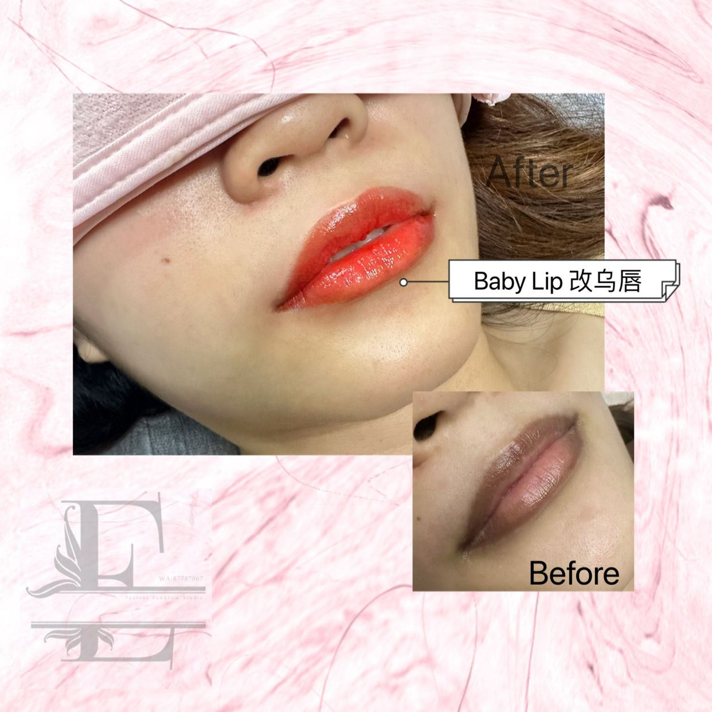

Lip embroidery · Singapore
Lip embroidery for pale or uneven lips

Pale lips, a blurred lip line, or colour that is stronger on one side than the other are the reasons people ask about lip embroidery at E-Perfect Beauty. The aim is a soft tint that looks like your mouth on a good day, not a layer of lipstick that photographs darker than the room. Evelyn plans that tint around the lip you have: the shape, the undertone, and how much of the border is already clear.
This is still semi-permanent colour in the skin. It is not a filler, it does not change the size of the lip, and it will not behave like a gloss you can wipe off if you dislike it that evening. That is why the consult, and often a photo before any booking, matters more than picking a shade name from a grid.
What the result is meant to look like
A successful lip embroidery from this studio reads as healthier colour and a cleaner edge. You should still look like you without lipstick. If your reference photos are all opaque, sharply outlined, and much darker than your natural lip, say that out loud. It may be possible to move in that direction, and it may be the wrong treatment. Evelyn would rather tell you on WhatsApp than discover it when the border is already drawn.
The lip is not traced from a stencil. Asymmetry is normal. One side of a mouth is often slightly narrower, and the cupid’s bow is rarely a perfect stamp. The work follows that structure and tidies what reads as patchy, instead of imposing a new mouth. You can see healed examples in the studio gallery, including the lip embroidery samples, and those photos are illustrations of the approach rather than a menu of shapes you can order.
Who it tends to suit
- Lips that look washed out in daylight, so you feel unfinished even with the rest of your makeup done.
- Colour that is uneven — a darker centre, pale corners, or a border that disappears.
- People who want to spend less time redrawing a lip line, including for work days in Bukit Panjang and the west, without wearing a full lipstick to the office.
- Clients who already like their lip size and only want the colour and edge to look more even.
It is a weaker match if you want a noticeably larger lip, a different cupid’s bow than your own, or a fashion shade that changes with the month. Those are makeup decisions. Embroidery has to still look reasonable when you are bare-faced in the kitchen light.
What happens in the consult
Bring, or send ahead, a straight-on photo with the lips closed and relaxed, no liner and no gloss, in daylight if you can. A second photo with your usual lipstick is useful only as a clue to the depth you like, not as a pattern to copy. Mention cold sores if you get them. The appointment can move so the skin is calm. Mention if you exfoliate the mouth area hard or use strong acids nearby, because that changes how colour is likely to soften later.
On the day, the border and the areas of patchy colour are discussed before pigment. You should see the plan and understand where the colour will be stronger and where it will stay sheer. Lip work at the studio sits in the same embroidery category as brows and eyeliner on the pricing page: the price is confirmed on WhatsApp after that recommendation, not published as a fixed fee.
Healing, in plain language
Colour on the lips usually looks stronger and more even on the day than it will once the surface has settled. Dryness and a tight feeling are common while the outer skin renews. Do not pick flakes off. Picking takes the result with it. Keep the area clean, avoid a new lip scrub or a harsh balm you have not been told to use, and message the studio if the lip becomes increasingly hot, swollen, or weepy rather than simply dry.
Singapore meals are a practical issue, not a medical one. Very hot soup, a lot of chilli oil, and constant licking while the surface is still settling are all worth easing off for the first days. Drink through a straw if the rim of a cup keeps rubbing the same spot. None of this replaces the aftercare you are given at the appointment. If you already know you cannot pause swimming or a peeling treatment that week, book a different week.
Sun on a long walk still fades semi-permanent colour over time, on lips as on brows. A lip balm with sun protection, once the skin is calm enough to tolerate it, is part of keeping a soft result soft. How many months the tint remains visible is not a single number the studio publishes. Skin, sun, and how often you scrub the mouth all change it. Touch-up timing is a conversation after Evelyn has seen your lips, not a guarantee on this page.
How this differs from eyebrow embroidery
The fear is similar — “it will look too dark” — and the method is not the same job. Brows are mapped to bone and hair direction. Lips are about undertone and a border that already exists. A brow that is too cool can look grey. A lip tint that ignores whether you are warmer or cooler in the face can look bruised even when the shape is neat. That is why a lipstick you love in a compact is only a hint. The first brow visit guide is the parallel read if your question is actually about eyebrows.
Eyeliner embroidery is the third option in the same menu: a fine lash-line for people who do not want to draw liner every day. It is not a substitute for lip colour. If you are unsure which of the three you mean, send one photo of the feature that bothers you and say what you do about it each morning.
Questions before a lip appointment
Will lip embroidery look like lipstick?
It should not. The intention is a soft, even tint that follows your lip, including on days you wear nothing else. A heavy opaque lip is a different request and may not be recommended.
Can pale or uneven colour be the only reason to do it?
Yes. Those are the usual reasons. The lip is not enlarged by this treatment. If size is the goal, embroidery is the wrong tool.
How do I know the shade before I book?
Send a bare-lip photo and, if you want, a photo in the lipstick depth you like. Evelyn confirms whether a sheer tint is suitable and quotes the price before you take an appointment.
What if I get cold sores?
Tell the studio before you book so the date can sit when the skin is calm. Do not come in on an active sore.
More from the journal: